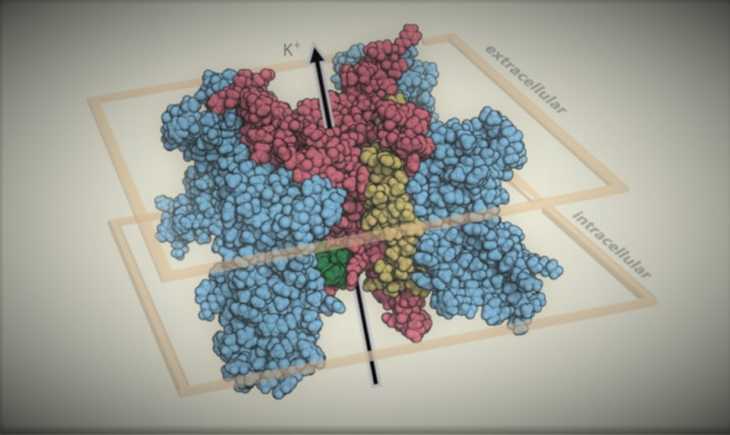

Open-source tools and data to help anyone determine the significance of genetic variants.
Genomic medicine wants yes/no answers to a nuanced question — whether a specific variant will produce a meaningful phenotype. Today's framework classifies variants from pathogenic to benign, with most stuck as a variant of uncertain significance.
At VariantBrowser.org we instead present a data-driven estimate of disease penetrance, alongside the raw data in searchable tables, for interpreting variants in KCNQ1, KCNH2 and SCN5A.
Heuristically, the diagnostic information one learns about a variant from its 3D location, in vitro functional data, and in silico predictors is roughly equivalent to clinically phenotyping 10–20 heterozygotes. Published in PLOS Genetics (2020), Circ. Genomic & Precision Medicine (2021), and Genetics in Medicine (2022).
LLM-driven discovery and extraction of per-variant carrier and phenotype evidence from the PubMed literature.
View on GitHub → GenePhenExtractLLM-powered structured extraction of gene, variant and phenotype data from the published record.
View on GitHub → variantFeaturesAggregates AlphaMissense, REVEL, CADD, ClinVar and gnomAD into one unified, queryable SQLite database.
View on GitHub → KCNH2_DMSDeep mutational scanning of KCNH2/Kv11.1 trafficking — perturbation data for thousands of variants at once.
View on GitHub → Bayes_BrS1_PenetrancePredicting Brugada-syndrome penetrance from NaV1.5 (SCN5A) functional, structural and sequence features.
View on GitHub → Q1_5A_Structure_FunctionPredicting functional perturbation in KV7.1 (KCNQ1) and NaV1.5 (SCN5A) from structure and sequence.
View on GitHub → RyR2-disease-penetranceCarrier data and disease-penetrance estimates for CPVT-associated RyR2 variants.
View on GitHub → LQTS-Penetrance-APC-MAVEPatient- and variant-specific features for the risk of severe cardiac events in long QT syndrome.
View on GitHub →Additional components — the Bayesian penetrance estimator, AlphaFold structural-proximity analysis, and the ClinGen gene–disease curation app — are in active development and available on request.